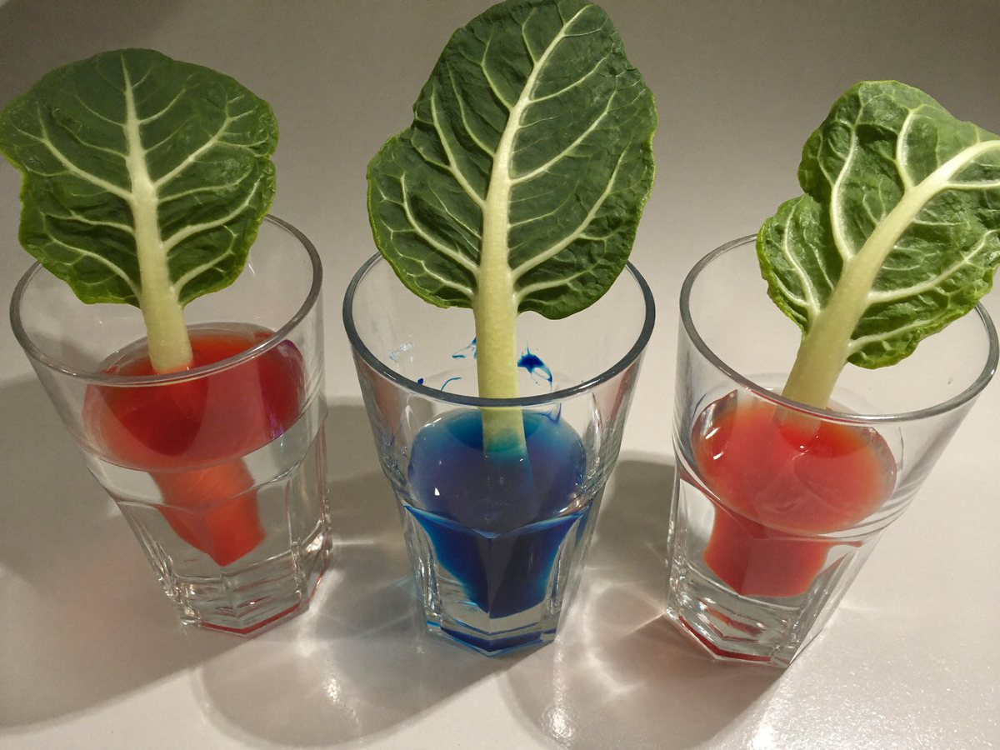

전체 단원 › 실험·활동 › 5~6학년 과학
물감 물 배추 줄기 관찰

색깔 물에 꽂아 둔 배추 잎과 셀러리가 물들어 가는 모습을 보며, 물이 지나가는 길을 찾아요.
준비 10분 · 관찰 하루 · 난이도 ★☆☆ 쉬움
준비물
- 셀러리 줄기 또는 배추 속잎 — 하얀 부분이 많을수록 잘 보여요
- 식용색소 (빨강·파랑) — 없으면 수성 물감을 진하게 풀어요
- 투명 컵이나 자른 페트병 2개 — 색깔 물을 담아요
- 돋보기 — 잘린 단면을 자세히 봐요
- 관찰 기록지 도안 — 아래에서 내려받아요
실험 방법
- 색깔 물 만들기
컵 두 개에 물을 반쯤 담고 색소를 진하게 풀어요. - 줄기 끝 자르기
셀러리 아래쪽을 어른이 칼로 비스듬히 새로 잘라요. 자르고 바로 물에 꽂아야 잘 빨아올려요. - 시간마다 관찰
1시간, 3시간, 다음 날 아침에 잎과 줄기 색이 어떻게 변했는지 기록지에 그려요. - 단면 보기
다음 날 줄기를 가로로 잘라 단면을 돋보기로 봐요. 색이 든 점들이 보이나요? - 두 색 실험
줄기 아래를 세로로 반 갈라 한쪽은 빨강, 한쪽은 파랑 물에 꽂아 두면 잎은 어떻게 될까요?
관찰해 봐요
- 색은 줄기의 어느 부분을 따라 올라갔나요?
- 잎 끝까지 색이 가는 데 얼마나 걸렸나요?
- 잎을 다 떼어 낸 줄기도 물을 잘 빨아올릴까요?
왜 그럴까?
식물의 뿌리와 줄기 속에는 물이 지나가는 가느다란 관이 있어요. 이것을 물관이라고 해요. 잎에서 물이 수증기로 빠져나가면 아래에서 물이 계속 끌려 올라와서, 색깔 물이 잎까지 퍼져요.